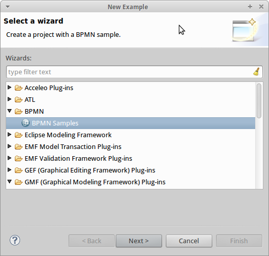
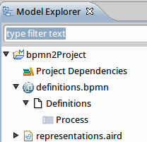
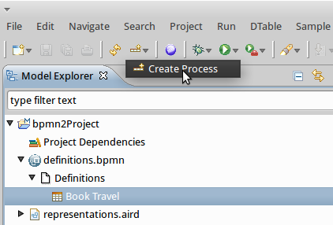
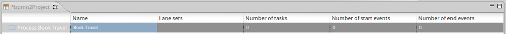
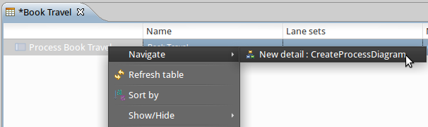

_© Obeo 2011 – All rights reserved. This program and the accompanying materials are made available under the terms of the Eclipse Public License v1.0_
Authors Stéphane Drapeau / Yann Mortier / Ali TakarabtContact stephane.drapeau@obeo.fr
This section describes how to start using the BPMN designer either from existing BPMN models or by creating a new one.
Import the TravelAgency project using the menu File/New/Example....
Pick the BPMN Samples wizard and click on Next.

Select the Travel Agency agency or Nobel Prize sample.

Click on Next, name your project and then click on Finish. The project will be created in your workspace.

Double click on TravelAgency.aird to open the designer. You will be greeted with the process definitions table.

From here you can navigate to the existing process diagram by right clicking on the process.

To create a new BPMN project, ensure that the Modeling perspective is enabled.
You can check the active perspective in the top-right corner of the window.

If the modeling perspective is not active then you have to open it. Click on the Open Perspective button and then select Other...

Select the Modeling perspective and the click on OK.

Then click on the wizard shortcuts at the top-left of the Eclipse Workbench. Select New BPMN Project.

You can choose a specific name for the project.

When you press the Finish button, the projects gets created and automatically enabled the BPMN viewpoints.

When you press the Finish button, the projects gets created and automatically enabled the BPMN viewpoints.
To start defining a new process we need to create a new Process Definition Table, in the semantic representation right click the Definitions element, select New Representation Menu and hold New Process Definitions.

When the table is created we have to populate it. To do this, select the Create Process button.

A new line will be added to the table, we may set the name of the new process in the Name column.

To create the graphical representation of the new Process, right click the first column and select Navigate → New Detail : Create Process Diagram.

When the representation diagram is open, we can start editing the new Process. You can open or create this diagram from the process definitions table.